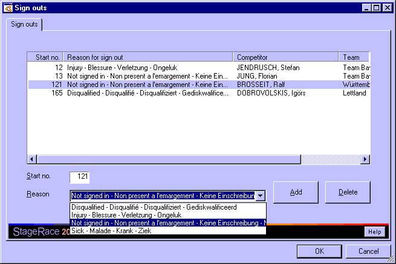

When a half stage is selected in the event tree, the Sign outs dialog can be opened through in the menu in order to manage the sign outs for that particular half stage.

In the dialog, the start no. and reason for a sign out can be entered. Then, through the Add button, the competitor is added to the list of sign outs.
Note that the start no. that you enter is validated, so that you can only add existing and available competitors to the list.
If you select a signed out competitor from the list, you can delete it from the list through the Delete button.
Previously used sign out reasons are remembered and can easily be retrieved from the drop-down box Reason.
Sign out reasons are merely informative.